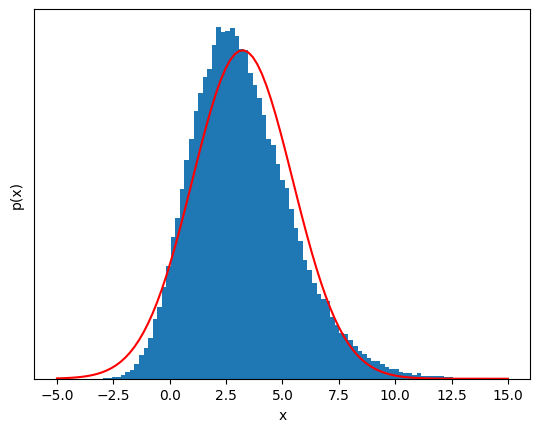
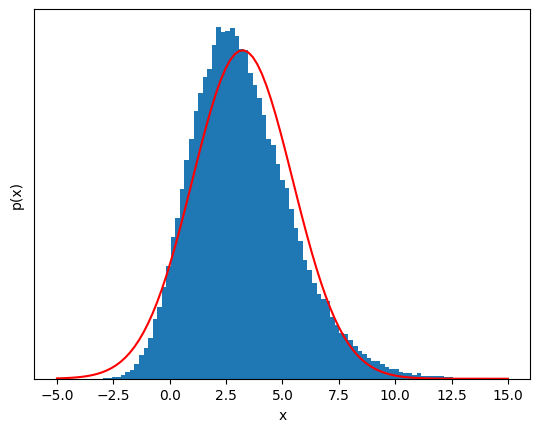
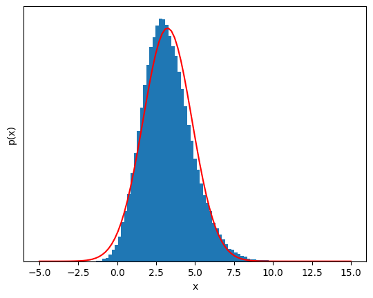
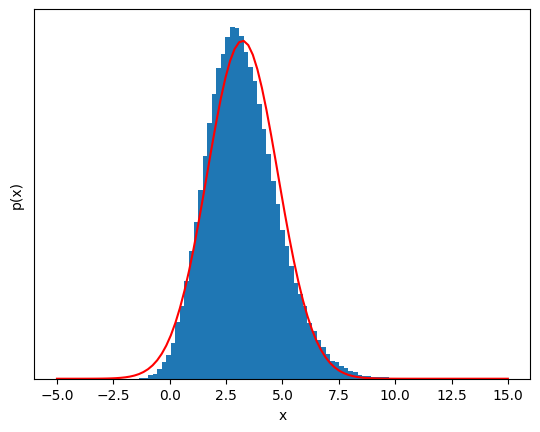

Central limit theorem (or why errors often look Gaussian)
Contents
Central limit theorem (or why errors often look Gaussian)#
The central limit theorem (CLT) is the reason sums or averages of measurements appear to be well-described by a Gaussian.
Suppose we have \(N\) random variables \(X_n\) from an distribution with finite variance.
The central limit theorem states that the sample mean \(S_N\) approaches a Gaussian distribution with the same mean and variance as the measurements \(X_N\). That is, if the mean and variance of \(X_n\) are given by \(E[X_n] = \mu\) and \(\mathrm{var}[X_n] = \sigma^2\), respectively, then the sample mean \(S_N\) of \(N\) measurements $\(S_N = \frac{1}{N} \sum_{n=1}^N X_n \rightarrow N(\mu, \sigma^2/N)\)\( where \)N(\mu, \sigma^2/N)\( denotes the normal (Gaussian) distribution with mean \)\mu\( and variance \)\sigma^2/N\(: \)\(p(S_N | \mu, \sigma^2/N) = \frac{1}{\sqrt{2 \pi} \sigma} \exp\left[-\frac{(S_N - \mu)^2}{2 \sigma^2/N}\right]\)$
This also means that the variance of the sample mean \(S_N\) shrinks as \(N^{-1}\) as the sample size \(N\) grows!
import numpy as np
import matplotlib.pyplot as plt
%matplotlib inline
def sample(N, sample_size=100000):
X_n = np.random.gumbel(1.5, 3.0, [sample_size, N])
return X_n[:,:].mean(axis=1)
def show_gaussian_fit(sample, bins):
mu = sample.mean()
sigma = sample.std()
a = sample.size * (bins[1] - bins[0])
fig,ax = plt.subplots()
ax.hist(sample, bins);
# show_gaussian_fit(S_N, bins);
ax.plot(bins, a/(np.sqrt(2*np.pi)*sigma) * np.exp(-(bins-mu)**2 / (2*sigma**2)), 'r-')
ax.get_yaxis().set_ticks([]); # turn off y ticks
# Label plot.
ax.set_xlabel('x');
ax.set_ylabel('p(x)');
X_n = sample(1)
plt.figure()
plt.plot(X_n,'.')
[<matplotlib.lines.Line2D at 0x7f8b30983460>]
# Plot the distribution of X_n and the Gaussian fit for comparison
bins = np.linspace(-5, 15, 100);
show_gaussian_fit(X_n, bins);
But if we sum a few of these variables, the distribution starts to look Gaussian!#
S_n = sample(3)
plt.figure()
plt.plot(S_n,'.')
show_gaussian_fit(sample(3), bins);
 

S_N = sample(6);
plt.figure()
plt.plot(S_n,'.')
show_gaussian_fit(S_N, bins);
 

20 samples, the distribution is almost impossible to distinguish from a Guassian.#
S_N = sample(20);
plt.figure()
plt.plot(S_n,'.')
show_gaussian_fit(S_N, bins);
This is almost Gaussian!#
The most amazing thing is that this works for any random variable \(X_n\) as long as its variance is finite—it can be extremely non-Gaussian and it will still eventually look Gaussian!
The take-away message is this: If there is some summing or averaging of independent, identically distributed data in your measurement, that new variable will likely be well-described by a Gaussian model.
References and further reading#
More information about the CLT can be found on Wikipedia: http://en.wikipedia.org/wiki/Central_limit_theorem